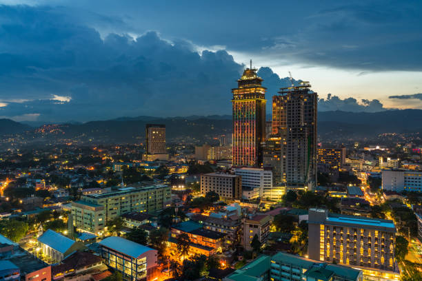

Cebu is one of the most popular tourist destinations in the Philippines. It is known for its beautiful beaches, rich history, and vibrant culture. Located in the Central Visayas region, Cebu attracts thousands of visitors every year from different parts of the world.
Aside from its natural attractions, Cebu is also famous for its historical landmarks such as Magellan's Cross, Basilica Minore del Santo Niño, and Fort San Pedro. These places reflect the rich Spanish influence in the province.
Cebu also offers amazing island adventures, diving spots, waterfalls, and delicious local foods like lechon. Because of its unique mix of nature, history, and culture, Cebu continues to be one of the best places to visit in the Philippines.